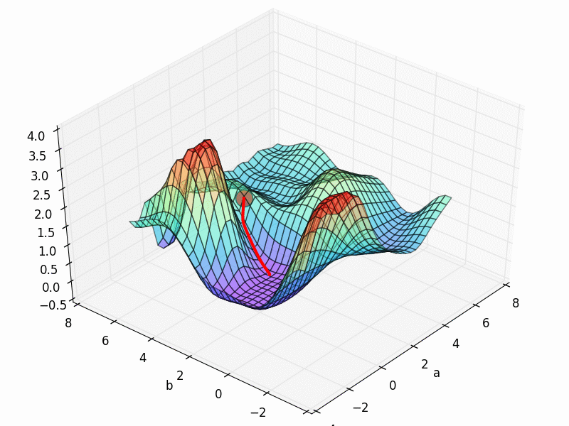
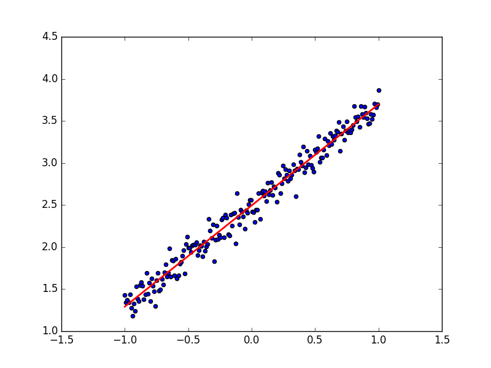
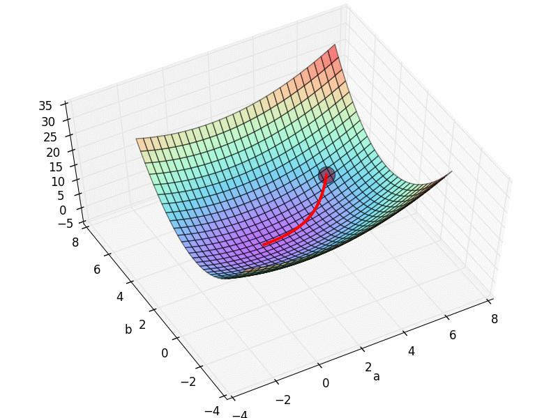
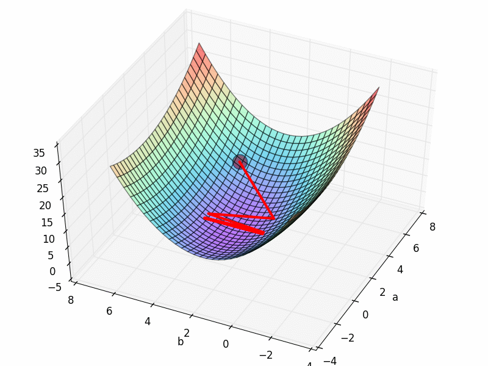
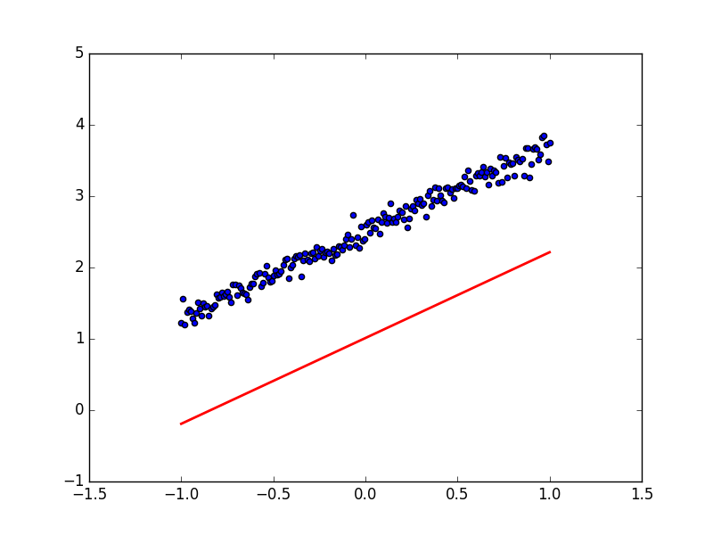
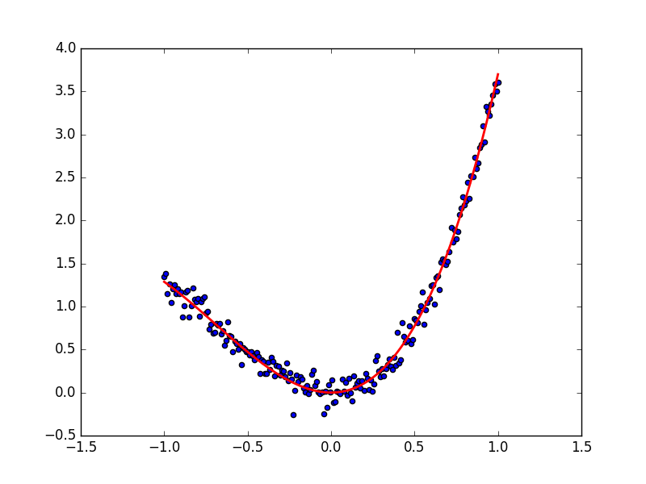
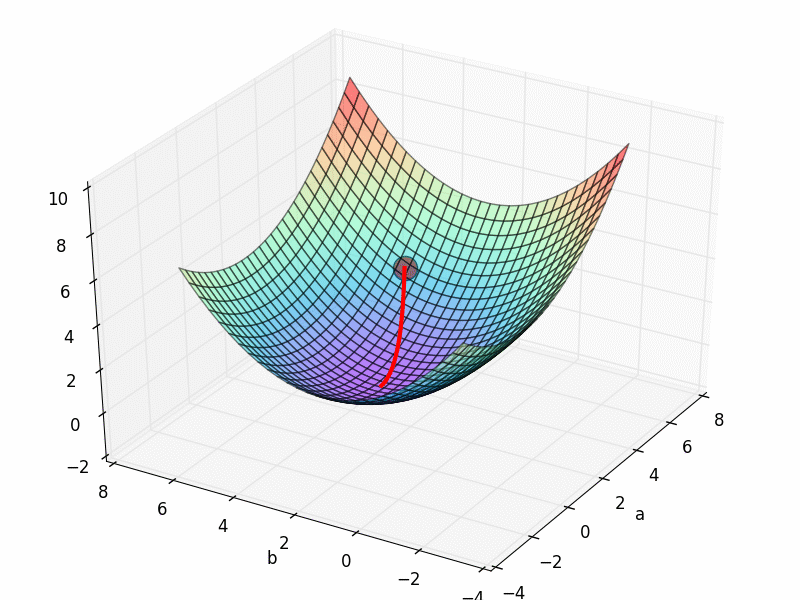
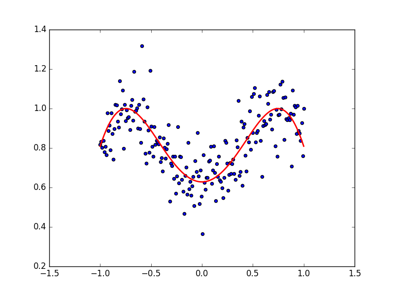
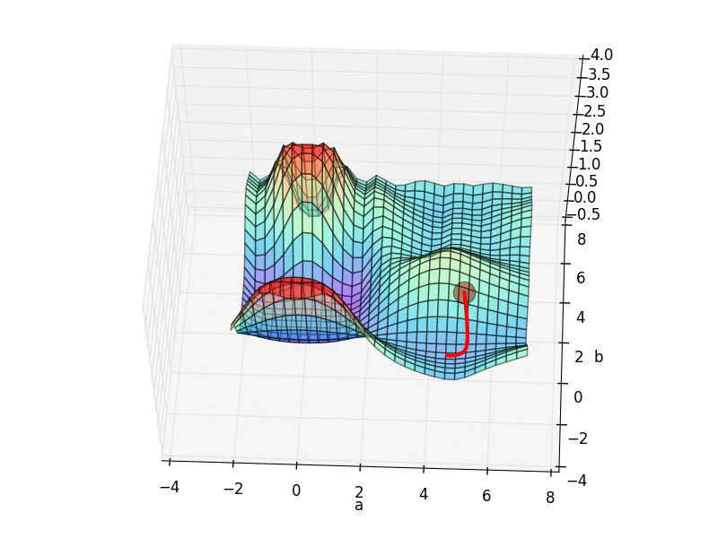
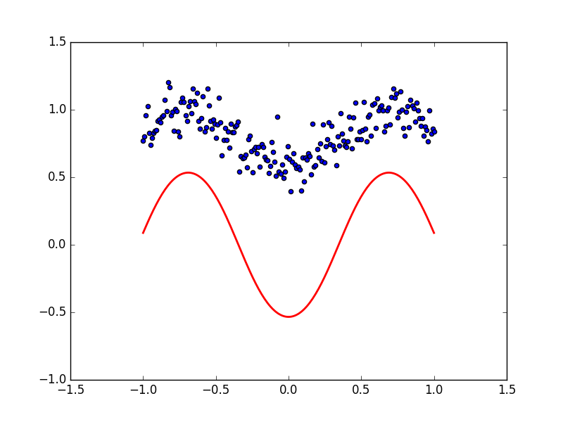

用 Tensorflow 可视化梯度下降
作者: 莫烦 编辑: 莫烦 2017-07-01
学习资料:
- 本节代码
- 为 TF 2017 打造的新版可视化教学代码
- 什么是梯度下降4分钟短视频
要点
这一次, 我们想要真正意义上的看到自己手中的模型是怎么样进行梯度下降 (gradient descent) 的. 打个比方就像下面这张图. 红色圆点就是最开始的参数误差.

同时, 我们还可以扩展开来, 神经网络就是一种梯度下降的方法. 而梯度下降是一种最优化方法, 我们还能拿它来干点其它事. 比如说 为公式调参. 我们会在下面具体讲解.
接着我们还会提到在梯度下降中, 以及神经网络中很难避免的一种现象, 叫做局部最优, 以及局部最优的影响.
普通的梯度下降
这次我们还是以代码的形式直观地展示我们要做的事情.
为了可视化梯度下降的过程, 我们需要用到 Python 中的几个模块, matplotlib, numpy, tensorflow.
如果对画图感兴趣的朋友们, 可以来看看我的 python 画图教程.
import tensorflow as tf
import numpy as np
import matplotlib.pyplot as plt
from mpl_toolkits.mplot3d import Axes3D # 画 3D 图的功能
LR = .1 # 神经网络的学习率
REAL_PARAMS = [1.2, 2.5] # 我们假设的需要被学习的真实参数
INIT_PARAMS = [[5, 4], # 在调参中不同初始化的参数点
[5, 1],
[2, 4.5]][0]
x = np.linspace(-1, 1, 200, dtype=np.float32) # x 数据
我们需要用 tensorflow 来帮我们梯度下降, 我们需要规定的就是最开始从哪里开始梯度下降, 这就是 INIT_PARAMS 的作用了.
我们会在之后的内容中尝试上面不同的初始化地点, 然后看看会有什么样的效果. 同时我们也会看看不同学习效率 LR 对模型学习的影响.
# test 1
y_fun = lambda a, b: a * x + b
tf_y_fun = lambda a, b: a * x + b
接着我们开始定义第一轮测试的公式. 假设我们要来拟合公式 a*x+b 中的参数 a 和 b, 我们就用 python 中的 lambda 来定义一个方程 y_fun.
y_fun 的输入就是不同参数 a b 的值, 和 我们之前定义的数据 x, 输出 y 值. 这里的 tf_y_fun 是传给 tensorflow 去优化的方程.
y_fun 是用来可视化和计算真是 y 用的.
noise = np.random.randn(200)/10
y = y_fun(*REAL_PARAMS) + noise # target
所以我们就能用 y_fun 来输出 正是 y数据. 当然为了看起来真实点, 我们还加了些随机噪点.
# tensorflow 计算优化图
a, b = [tf.Variable(initial_value=p, dtype=tf.float32) for p in INIT_PARAMS]
pred = tf_y_fun(a, b)
mse = tf.reduce_mean(tf.square(y-pred))
train_op = tf.train.GradientDescentOptimizer(LR).minimize(mse)
接着我们就来定义 Tensorflow 的计算优化图纸. 定义两个参数 a, b 并给他们初始化成我们最开始假设的初始化值 INIT_PARAMS.
然后预测, 然后算误差, 最后优化.
a_list, b_list, cost_list = [], [], []
with tf.Session() as sess:
sess.run(tf.global_variables_initializer())
for t in range(400):
a_, b_, mse_ = sess.run([a, b, mse])
a_list.append(a_); b_list.append(b_); cost_list.append(mse_) # record parameter changes
result, _ = sess.run([pred, train_op]) # training
接着我们就开始训练, 并时刻记录训练时的 a,b 参数 以及 误差 变化.
最后可视化他们, 因为可视化代码不是重点, 所以想仔细看代码的朋友, 欢迎来我的 Github 中看全套代码.
首先我们先看看训练出来的预测线和数据的拟合度吧:

看起来非常完美, 成功的用一条直线预测出了规律. 那我们看看梯度下降的 3D 图,

看上去他从最开始的红点, 很顺利的滑落到了误差最小的地方. 梯度下降圆满完成.
如果我们来尝试不同的学习效率呢, 比如调整最开始的 LR=1, 就会发生下面这样的事.

貌似这时的梯度下降变得纠结起来, 梯度下不去了. 原来这就是因为学习效率过大的原因, 导致虽然学得快, 但是没办法收敛. 我们也能从学习到的预测线看出来这样的现象, 现在下面的预测线没有办法预测出真实数据了. 所以切记, 当你的模型没办法收敛的时候, 试试调低学习率.

为模型,公式调参
接下来我们看看 Tensorflow 的另一种用途, 为公式调参. 说到底, 神经网络就是用梯度下降, 而梯度下降就是一种优化模式 具体参考我制作的这个短视频.
所以我们也可以使用 Tensorflow 的梯度下降机制来调参. 比如我们将上面的提到的 y_fun 和 tf_y_fun 改成下面这样 (其实上面也是在调参).
# test 2
y_fun = lambda a, b: a * x**3 + b * x**2
tf_y_fun = lambda a, b: a * x**3 + b * x**2
现在有点像一个经验公式了吧. 其实很多时候, 人们总结出来的经验公式其实是很有用的, 我们没必要大费周章来使用神经网络处理所有问题, 首先遇到一个问题, 你要想的是,
在这个问题中, 是否以前有人提出过什么经验公式的, 那我来对这个经验公式调调参. 这可比神经网络方便多了. 而且梯度下降调参只是调参中的一种方式, 还有很多种调参方式,
具体可以看看和使用 python 的另一个模块 scipy 中的 optimization 链接.
好了, 如果你决定用梯度下降调参, 这份代码就是一种途径. 代码的其他部分不用过多更改. 我们直接来看效果吧. 首先看看数据点和拟合参数a, b 后的曲线.

再来看看之前的梯度下降图:

局部最优,全局最优
在回到神经网络的话题中来, 多层的有激活神经网络必定有很多局部最优解的. 我在这个短视频中也提过什么是全局最优和局部最优.
那么我们就来做一个有两个参数的简单神经网络吧. 同样, 我们至于要修改 y_fun 和 tf_y_fun 就好了:
# test 3
y_fun = lambda a, b: np.sin(b*np.cos(a*x))
tf_y_fun = lambda a, b: tf.sin(b*tf.cos(a*x))
想象 np.cos(a*x) 是有激活的一层神经层, np.sin(b*last_layer) 是有激活的第二层. 那么这个方程就是最简单的一种两层神经网络了.
如果使用的初始参数点是 INIT_PARAMS=[2, 4.5] 他的数据点和拟合曲线是下面这样:

他的梯度下降空间就是我们最开始看到的那个.
从初始的 INIT_PARAMS=[2, 4.5] 这个点开始梯度下降, 我们就能成功的找到接近全局最优的 a=1.2; b=2.5,
但是这个3D 图上有很多局部最优点, 如果我们换一个初始参数位置, 比如 INIT_PARAMS=[5, 1]. 那么就会下降到一个最靠近他的局部最优.

这样, 我们的模型就只能止步在这, 而且并不能继续向前拟合数据点了. 所以可以看出参数的初始化位置的确很重要.

通常, 在初始化神经网络的参数时, 我们可以用到 Normal distribution 等方式, 并且多做几次初始化实验, 看看效果如何. 运气好的时候, 初始化很成功, 带来的比较好的局部最优, 运气不好的时候.. 你懂的.. 继续做实验吧.
如果你觉得这篇文章或视频对你的学习很有帮助, 请你也分享它, 让它能再次帮助到更多的需要学习的人. 莫烦没有正式的经济来源, 如果你也想支持 莫烦Python 并看到更好的教学内容, 赞助他一点点, 作为鼓励他继续开源的动力.